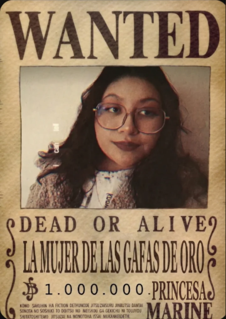

No importa por cuántos momentos malos pases, yo siempre estaré para ti, para darte ánimos y todo mi apoyo y si puedo ayudar haré todo lo que esté en mi mano para hacerlo. Porque no me gusta saber que pasas por cosas así, ya que lo único que quiero es ver una linda sonrisa en tu linda carita.— Monkey D. Luffy
Si el universo entero decidiera desplomarse en cenizas heladas, si la lógica fría del circo digital nos exigiera el olvido y la distancia, yo no dudaría ni un instante. Te lo juro: quemaría este mundo entero con mis propias manos y reduciría a polvo cada estrella que nos prohíbe, solo para tener el derecho sagrado de abrazarte entre las brasas.
Porque aunque me supliques que te deje sola, aunque repitas que no debo amarte ni extrañarte, y aunque intentes cargar con todo el peso del abismo para hacérmelo difícil... yo sé que detrás de cada muralla que levantas solo hay un grito pidiendo clemencia al dolor. Y mientras tú sigues corriendo contra el viento, rota pero indomables, yo no necesito razones para quedarme: solo necesito tus brazos abiertos diciéndome “cuéntamelo todo”, para saber que, incluso en medio de las ruinas, valió la pena arder por ti.Inspirado en Digital Circus y por ti, princesa mía.
Bellisima dama de porté elegante, diosa griega ¿Me otorgaría usted el privilegio de ser el inicio y el final de su historia?
Si el cielo del Grand Line se quiebra en un atardecer de fuego y oro, y las olas del mar embravecido golpean sin piedad contra el madero, déjeme decirle que ya no busco ningún One Piece enterrado en la última isla. El único tesoro real lo encontré en su mirada, anclada en medio de la tormenta.
Sé que a veces el timón pesa y las corrientes nos empujan al abismo, pero camina despacio, quédate un instante conmigo. Como si quisieras quedarte con todo mi tiempo y un poquito más. Porque en este mar infinito, donde los mapas pierden el rumbo y las brújulas enloquecen, yo ya no le temo a la deriva si es usted quien habita el puerto al que quiero volver.
¿Me acompañas en esta travesía sin brújula ni final? Despleguemos las velas, que el mundo arda afuera, y zarpemos juntos amada mia.